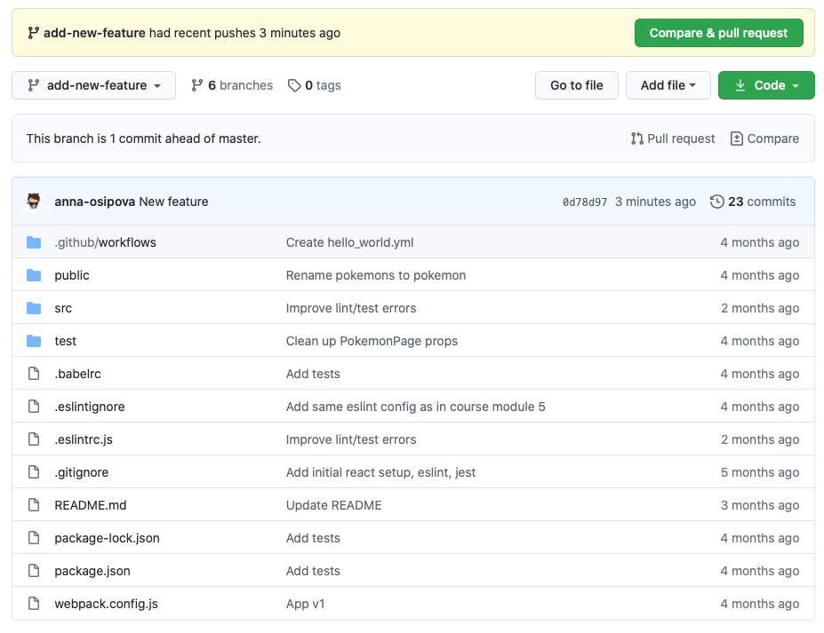
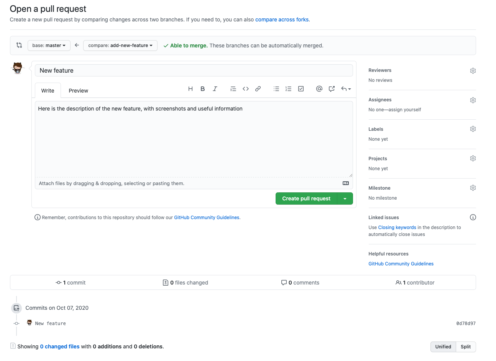
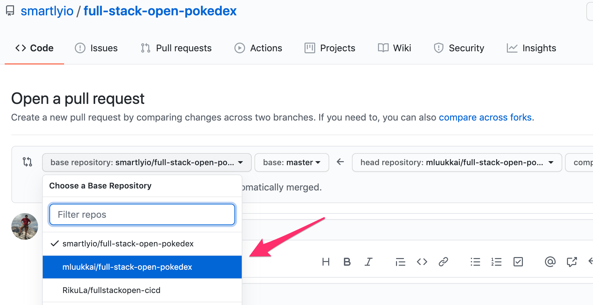
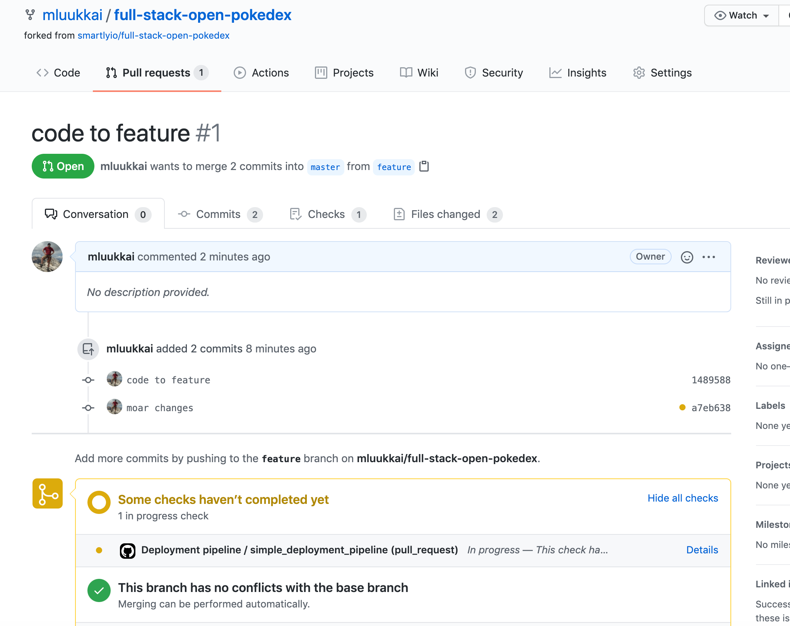
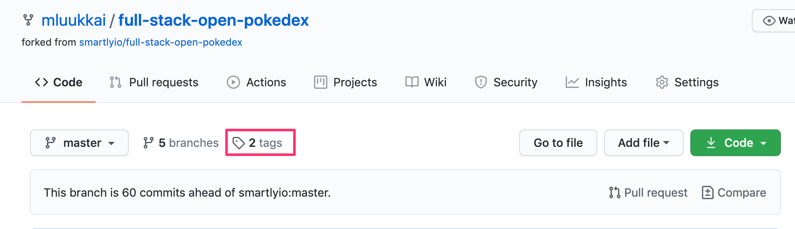
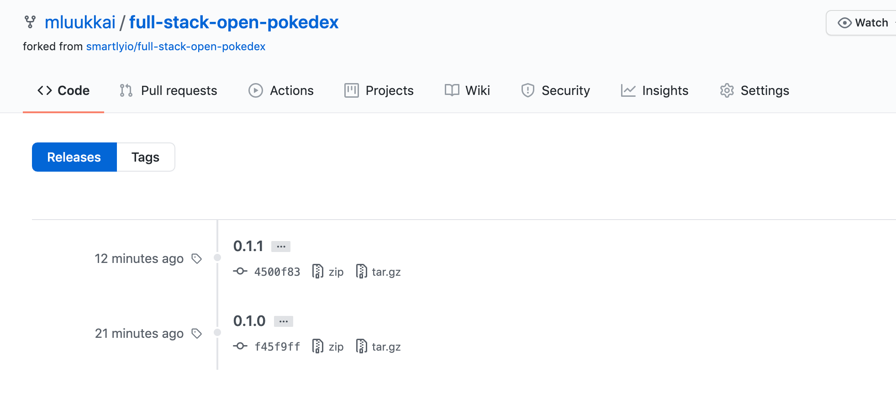
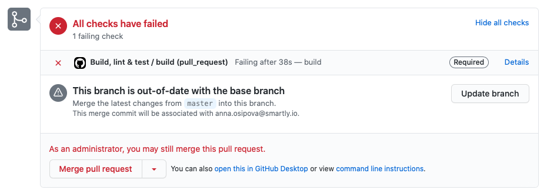
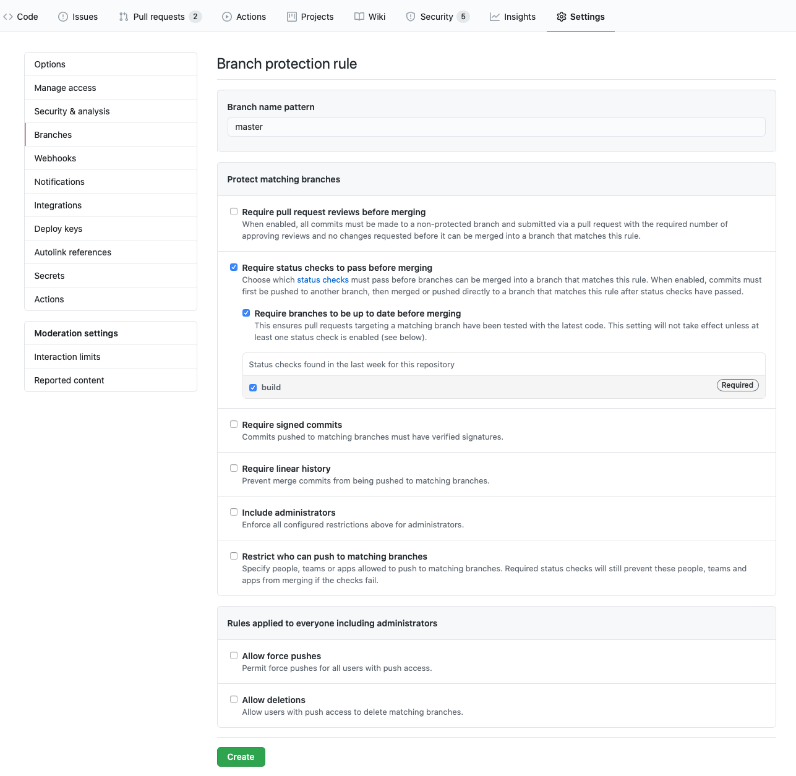

你的代码的主分支应该始终保持绿色。绿色意味着你的构建管道的所有步骤都应该成功完成：项目应该成功构建，测试应该无误运行，并且linter不应该有任何产生警告，等等。
为什么这很重要？你可能会专门从主分支将代码部署到生产中。主分支中的任何故障都意味着在问题解决之前，新功能无法部署到生产中。有时，你会在生产中发现一个讨厌的错误，而CI/CD管线却没有发现。在这种情况下，你希望能够以安全的方式将生产环境回滚到之前的提交。
那你如何保持主分支的绿色？避免将任何修改直接提交到主分支。相反，在一个基于主分支的最新版本的分支上提交代码。一旦你认为该分支可以合并到主分支，你就创建一个 GitHub 拉动请求（也被称为 PR）。
Working with Pull Requests
在任何至少有两个贡献者的软件项目上工作时，拉取请求是协作过程的核心部分。当对项目进行修改时，你要在本地检出一个新的分支，做出并提交你的修改，将该分支推送到远程仓库（在我们的例子中是推送到GitHub），并创建一个拉动请求，让别人在你的修改被合并到主分支之前进行审查。
为什么使用拉动请求并让至少一个人审查你的代码总是一个好主意，有几个原因。
- 即使是经验丰富的开发者也会经常忽略他们代码中的一些问题：我们都知道隧道视野效应。
- 在读完你的修改后，至少有一个其他开发者会熟悉你所做的修改。
- 使用PR可以让你在代码进入主分支之前自动运行CI管道中的所有任务。GitHub Actions为拉取请求提供了一个触发器。
你可以配置你的GitHub仓库，使拉动请求在被批准之前不能被合并。

要打开一个新的拉动请求，在GitHub中打开你的分支，点击顶部的绿色 "比较和拉动请求 "按钮。你会看到一个表格，你可以在其中填写拉动请求的描述。

GitHub's pull request界面渲染的是描述和讨论界面。在底部，它显示了为每个PR配置的所有CI检查（在我们的例子中是每个Github行动），以及这些检查的状态。绿板是你的目标你可以点击每个检查的细节来查看细节和运行日志。
到目前为止，我们所看到的所有工作流程都是由对主分支的提交触发的。要使工作流为每个拉动请求运行，我们必须更新工作流的触发部分。我们对 "主 "分支（我们的主分支）使用 "pull_request "触发器，并将该触发器限制为 "打开 "和 "同步 "事件。基本上，这意味着，当主分支的PR被打开或更新时，工作流就会运行。
因此，让我们改变工作流程的触发事件如下。
on:
push:
branches:
- master
pull_request: // highlight-line
branches: [master] // highlight-line
types: [opened, synchronize] // highlight-line
我们很快就会使代码无法直接推送到主分支，但与此同时，让我们仍然为所有可能直接推送到主分支的工作流程运行。
Exercises 11.13-11.14.
我们的工作流在确保良好的代码质量方面做得很好，但由于它是在提交到主分支的过程中运行的，所以它发现问题的时间太晚了
11.13 Pull request
按照上面的建议，更新现有工作流的触发器，使其在主干分支的新拉取请求上运行。
创建一个新的分支，提交你的修改，并向主分支发出拉取请求。
如果你以前没有使用过分支，可以查看例如这个教程来开始。
注意，当你打开拉取请求时，确保在这里选择你的自己的仓库作为目标基础仓库。默认情况下，选择的是智能的原始仓库，你不希望这样做。

在拉动请求的 "对话 "标签中，你应该看到你的最新提交和正在进行的检查的黄色状态。

一旦检查完成，状态应该转为绿色。确保所有的检查都通过了。先不要合并你的分支，我们还有一件事需要改进，那就是我们的管道。
11.14 Run deployment step only for the main branch
一切看起来都很好，但实际上目前的工作流程有一个相当严重的问题。所有的步骤，包括部署，都是为拉取请求而进行的。这肯定是我们不希望看到的。
幸运的是，这个问题有一个简单的解决方案!我们可以在部署步骤中添加一个if条件，确保该步骤只在代码被合并或推送到主分支时执行。
工作流context给出了工作流运行的代码的各种信息。
相关信息在GitHub context中找到，字段event_name告诉我们触发工作流的事件的 "名字 "是什么。当拉动请求被合并时，事件的名称在某种程度上是矛盾的push，与推送代码到仓库时的事件相同。因此，我们通过在部署代码的步骤中添加以下条件来获得所需的行为。
if: ${{ github.event_name == 'push' }}
再推送一些代码到你的分支，并确保部署步骤不再执行。然后将该分支合并到主分支，确保部署发生。
Versioning
版本管理最重要的目的是唯一地识别我们正在运行的软件和与之相关的代码。
版本的排序也是一个重要的信息。例如，如果当前的版本破坏了关键功能，我们需要识别软件的前一版本，这样我们就可以将该版本回滚到稳定状态。
Semantic Versioning and Hash Versioning
一个应用如何进行版本管理，有时被称为版本策略。我们将看一看并比较两个这样的策略。
第一种是语义版本管理，版本的形式是{major}.{minor}.{patch}。例如，如果版本是1.2.3，它有1作为主要版本，2是次要版本，3是补丁版本。
一般来说，修复功能而不从外部改变应用的工作方式的变化是patch变化，对功能进行小的改变（从外部看）的变化是minor变化，完全改变应用的变化（或主要功能变化）是major变化。这些术语的定义可能因项目而异。
例如，npm-libraries遵循的是语义上的版本划分。在写这篇文字的时候（2022年3月3日），React的最新版本是17.0.2，所以主要版本是17，已经提升了两个补丁级别，次要版本仍然是0。
Hash versioning (also sometimes known as SHA versioning) is quite different. The version "number" in hash versioning is a hash (that looks like a random string) derived from the contents of the repository and the changes introduced in this commit. In git, this is already done for you as the commit hash that is unique for any change set.
哈希版本控制几乎总是与自动化结合使用。拷贝32个字符的长版本号，以确保所有东西都被正确部署，是件很痛苦的事（而且容易出错）。
But what does the version point to?
确定一个给定的版本中有哪些代码是很重要的，而实现这一目标的方式在语义版本控制和哈希版本控制之间又有很大的不同。在哈希版本管理中（至少在git中），这就像根据哈希查找提交一样简单。这将让我们确切地知道哪些代码是用哪个版本部署的。
在使用语义版本管理时，情况就比较复杂了，有几种方法可以解决这个问题。这些方法归结为三种可能的方法：代码本身的东西、 repo或 repo元数据中的东西、完全在 repo之外的东西。
虽然我们不会讨论清单上的最后一个选项（因为这本身就是一个兔子洞），但是值得一提的是，这可以是一个简单的电子表格，列出语义版本及其指向的提交。
对于这两种基于存储库的方法来说，在代码中包含某些内容的方法通常可以归结为文件中的版本号，而存储库/元数据方法通常依赖于tags或者（在GitHub的情况下）发布。在标签或版本的情况下，这相对简单，标签或版本指向一个提交，该提交中的代码就是该版本中的代码。
Version order
在语义版本管理中，即使我们有不同类型的版本跳跃（major、minor或patch），要把这些版本按顺序排列还是相当容易的。1.3.7在2.0.0之前，而2.0.0本身在2.1.5之前，而2.1.5在2.2.0之前。要知道最后一个版本是什么，仍然需要一个版本列表（由软件包管理器或GitHub提供，很方便），但看这个列表和讨论它更容易。说 "我们需要回滚到3.2.4 "比当面沟通一个哈希值更容易。
这并不是说哈希值是不方便的：如果你知道哪个提交导致了特定的问题，很容易通过git历史回看并获得前一个提交的哈希值。但如果你有两个哈希值，比如d052aa41edfb4a7671c974c5901f4abe1c2db071和12c6f6738a18154cb1cef7cf0607a681f72eaff3，你真的不能说哪个在历史上变得更早，你需要更多东西，比如揭示排序的git日志。
Comparing the Two
我们已经谈到了上面讨论的两种版本管理方法的一些优势和劣势，但是解决它们各自可能被使用的地方也许是有用的。
Semantic Versioning（语义版本控制）在部署版本号可能具有重要意义或者实际上可能被查看的服务时，效果很好。举个例子，想想你正在使用的JavaScript库。如果你正在使用某个特定库的3.4.6版本，而现在有了3.4.8版本的更新，那么如果该库使用了语义版本管理，你就可以（希望）安全地假定，你可以在不破坏任何东西的情况下进行升级。如果版本跳转到4.0.1，那么也许就不是那么安全的升级了。
哈希版本管理在大多数提交被构建到工件（例如可运行的二进制文件或Docker镜像）中的情况下非常有用，这些工件本身被上传或存储。举个例子，如果你的测试需要将你的包构建成一个工件，上传到服务器上，然后针对它进行测试，那么采用哈希版本控制就很方便，因为它可以防止意外。
举个例子，你在3.2.2版本上工作，你有一个失败的测试，你修复了这个失败并推送了提交，但由于你在你的分支中工作，你不会更新版本号。如果没有哈希版本管理，工件的名称可能不会改变。如果在上传工件时有错误，可能测试会用旧的工件再次运行（因为它还在那里，并且有相同的名字），你会得到错误的测试结果。如果工件是用哈希值定义的，那么版本号必须在每次提交时改变，这意味着如果上传失败，会有一个错误，因为你告诉测试要运行的工件不存在。
在出错时发生错误几乎总是比在CI中默默地忽略一个问题要好。
Best of Both Worlds
从上面的比较来看，语义版本管理对发布软件有意义，而基于哈希的版本管理（或工件命名）在开发期间更有意义。这不一定会造成冲突。
这样想吧：版本管理归结为一种技术，它指向一个特定的提交，并说 "我们将给这个点一个名字，它的名字将是3.5.5"。没有什么可以阻止我们用哈希值来指代同一个提交。
有一个问题。我们在这一部分的开头讨论过，我们总是要知道我们的代码到底发生了什么，例如，我们需要确定我们已经测试了我们想要部署的代码。有两个平行的版本（或命名）惯例会使这个问题变得有点困难。
例如，当我们有一个项目使用基于哈希的工件构建进行测试时，总是可以跟踪每一个构建、lint和测试的结果到一个特定的提交，开发人员知道他们的代码处于什么状态。这些都是自动化的，对开发者来说是透明的。他们不需要知道CI系统正在使用下面的提交哈希值来命名构建和测试工件的事实。当开发人员将他们的代码合并到主分支时，CI再次接管。这一次，它将构建和测试所有的代码，并一次性给它一个语义上的版本号。它用一个git标签把版本号附在相关的提交上。
在上述案例中，我们发布的软件是经过测试的，因为CI系统确保对它要标记的代码进行测试。如果说该项目使用了语义上的版本管理，而简单地忽略了CI系统用基于哈希的命名系统来测试各个开发者分支/PR，这并不是不正确的。我们这样做是因为我们所关心的版本（被发布的版本）被赋予了一个语义版本。
Exercises 11.15-11.16.
让我们扩展我们的工作流程，以便当一个拉动请求被合并到主分支时，它会自动增加（bump）版本，并tag用版本号发布。我们将使用一个由第三方开发的开源动作。anothrNick/github-tag-action。
11.15 Adding versioning
我们将用多一个步骤来扩展我们的工作流程。
- name: Bump version and push tag
uses: anothrNick/github-tag-action@1.36.0
env:
GITHUB_TOKEN: ${{ secrets.GITHUB_TOKEN }}
我们将环境变量secrets.GITHUB_TOKEN传递给该行动。由于它是第三方行动，它需要在你的存储库中进行认证的令牌。你可以在这里阅读更多关于GitHub Actions中的认证。
anothrNick/github-tag-action 动作可以接受多个环境变量。这些变量可以修改行动对你的版本进行标记的方式。你可以在README中查看这些变量，看看什么适合你的需要。
正如你从文档中看到的，默认情况下，你的版本会收到一个*小的凸起，意味着中间的数字会被增加。
修改上面的配置，使每个新的版本默认是一个_补丁_版本号的提升，所以默认情况下，最后的数字会被增加。
记住，我们只想在主分支发生变化时提升版本。因此，添加一个类似的if条件，以防止在pull request上的版本颠簸，就像在练习11.14中做的那样，防止在pull request相关的事件上进行部署。
现在完成工作流程。不要只是把它作为另一个步骤加入，而是把它配置成一个单独的工作，依赖于负责打针、测试和部署的工作。因此，请修改你的工作流程定义如下。
name: Deployment pipeline
on:
push:
branches:
- master
pull_request:
branches: [master]
types: [opened, synchronize]
jobs:
simple_deployment_pipeline:
runs-on: ubuntu-latest
steps:
// steps here
tag_release:
needs: [simple_deployment_pipeline]
runs-on: ubuntu-latest
steps:
// steps here
正如前面提到的那样，工作流中的作业是并行执行的，但由于我们希望先完成打样、测试和部署，所以我们设置了一个依赖关系，即tag/_release等待另一个作业先执行，因为我们不希望在发布版通过测试并被部署之前对其进行打样。
如果你对配置不确定，你可以将DRY_RUN设置为true，这将使该动作输出下一个版本号，而不需要创建或标记发布版!
一旦工作流程运行成功，版本库就会提到有一些标签。

点击它，你可以看到列出的所有标签（也就是git标记发布的机制）。

11.16 Skipping a commit for tagging and deployment
一般来说，你越是频繁地将主分支部署到生产中，就越好。然而，有时可能会有一些合理的理由，跳过某个特定的提交或合并的拉动请求，使之成为标记并发布到生产中。
修改你的设置，如果拉动请求中的提交信息包含_#skip_，那么合并后的请求将不会被部署到生产中，也不会被标记上版本号。
提示：
实现这一点的最简单方法是改变相关步骤的if 条件。与练习11-14类似，你可以从工作流的GitHub上下文获取相关信息。
你可以把它作为一个起点。
name: Testing stuff
on:
push:
branches:
- main
jobs:
a_test_job:
runs-on: ubuntu-latest
steps:
- uses: actions/checkout@v4
- name: github context
env:
GITHUB_CONTEXT: ${{ toJson(github) }}
run: echo "$GITHUB_CONTEXT"
- name: commits
env:
COMMITS: ${{ toJson(github.event.commits) }}
run: echo "$COMMITS"
- name: commit messages
env:
COMMIT_MESSAGES: ${{ toJson(github.event.commits.*.message) }}
run: echo "$COMMIT_MESSAGES"
看看工作流日志中会打印出什么!
注意，你只能在推送或合并到主分支时访问提交和提交信息，所以对于拉取请求，github.event.commits是空的。反正也不需要，因为我们想对拉取请求完全跳过这一步。
你很可能需要函数 contains 和 join 作为你的if条件。
开发工作流程并不容易，很多时候，唯一的选择是试验和错误。实际上，最好是有一个单独的仓库来获得正确的配置，当它完成后，将正确的配置复制到实际的仓库中。
也可以安装一个工具，如act，使其有可能在本地运行你的工作流程。如果你最终涉及到更多的用例，例如通过创建你的自己的自定义动作，通过设置一个像act这样的工具的负担，很可能是值得的。
A note about using third party actions
当使用第三方动作，如github-tag-action时，用哈希值指定所使用的版本而不是使用版本号可能是一个好主意。这样做的原因是，用git标签实现的版本号原则上可以移动。所以今天的1.33.0版本可能是一个不同的代码，而下周的版本是1.33.0!
然而，在任何情况下，带有特定哈希值的提交代码都不会改变，所以如果我们想100%确定我们使用的代码，使用哈希值是最安全的。
动作的版本1.33.0对应于带有哈希值的提交 eca2b69f9e2c24be7decccd0f15fdb1ea5906598，所以我们可能要改变我们的配置如下。
- name: Bump version and push tag
uses: anothrNick/github-tag-action@eca2b69f9e2c24be7decccd0f15fdb1ea5906598 // highlight-line
env:
GITHUB_TOKEN: ${{ secrets.GITHUB_TOKEN }}
当我们使用GitHub提供的操作时，我们相信他们不会乱用版本标签，并且会彻底测试他们的代码。
在第三方动作的情况下，代码最终可能是有缺陷的，甚至是恶意的。即使开源代码的作者没有做坏事的意图，他们最终也可能把他们的证书留在咖啡馆的便条上，然后谁知道会发生什么。
通过指向特定提交的哈希值，我们可以确保运行工作流时使用的代码不会改变，因为改变底层提交及其内容也会改变哈希值。
Keep the main branch protected
GitHub允许你设置受保护的分支。保护你最重要的分支是很重要的，它不应该被破坏。master/main。在版本库设置中，你可以选择几个级别的保护。我们不会详述所有的保护选项，你可以在 GitHub 文档中了解更多信息。合并到主分支时要求拉取请求批准是我们前面提到的选项之一。
从 CI 的角度来看，最重要的保护措施是要求在 PR 合并到主干分支之前必须通过状态检查。这意味着，如果你设置了GitHub动作来运行例如linting和测试任务，那么在所有lint错误被修复和所有测试通过之前，PR不能被合并。因为你是仓库的管理员，你会看到一个选项来覆盖这个限制。然而，非管理员就没有这个选项了。

要为你的主分支设置保护，在版本库的顶部菜单中导航到版本库的 "设置"。在左边的菜单中选择 "Branches"。点击 "分支保护规则 "旁边的 "添加规则 "按钮。输入一个分支名称模式（"master "或 "main "就可以了），并选择你想设置的保护。至少 "要求在合并前通过状态检查 "是必要的，这样才能充分利用 GitHub Actions 的力量。在它下面，你还应该勾选 "要求分支在合并前是最新的"，并选择所有在合并 PR 前应该通过的状态检查。

Exercise 11.17
11.17 Adding protection to your main branch
为你的master（或main）分支添加保护。
你应该保护它。
还不要检查包括管理员。如果你这样做了，你就需要其他人来审查你的拉动请求，以获得代码的发布